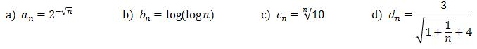
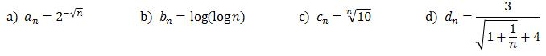
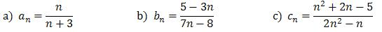
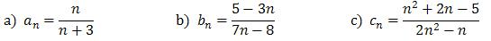
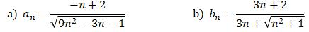
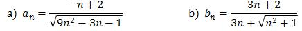
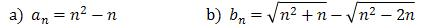
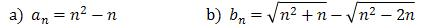

Granica ciągu liczbowego
Granica ciągu - to liczba do której dążą kolejne wyrazy ciągu.
Granicę ciągu liczbowego \((a_n)\) oznaczamy tak: \[\lim_{n \to \infty} a_n\]
Granicę ciągu liczbowego \((a_n)\) oznaczamy tak: \[\lim_{n \to \infty} a_n\]


Definicja
Liczba \(g\) jest granicą ciągu (\(a_n\)), jeżeli dla każdej dodatniej liczby \(\epsilon\), istnieje taka liczba \(N\), że dla wszystkich \(n\) większych od \(N\) zachodzi: \[|a_n - g|\lt \epsilon \] Zapis symboliczny powyższej definicji to: \[\lim_{n \to \infty} a_n=g
\Leftrightarrow \underset{\epsilon \gt 0}{\forall}\ \ \underset{N}{\exists}\ \ \underset{n\gt
N}{\forall}\ \ |a_n-g|<\epsilon \]
W tym nagraniu wideo przedstawiam intuicję jaka stoi za pojęciem granicy ciągu.
W tym nagraniu wideo omawiam definicję granicy ciągu.
W tym nagraniu pokazuję jak liczyć granice z ciągów niewymiernych.
Czas nagrania: 17 min.
W tym nagraniu omawiam sposoby liczenia granic z ciągów wykładniczych.
Czas nagrania: 20 min.
Oblicz granice ciągów:
\(a_n=\frac{1}{n}+5\)
\(b_n=17-3n\)
\(c_n=\frac{1}{n+3}-7\)
\(d_n=\frac{(-1)^n}{n}\)
Oblicz granice ciągów:


Oblicz granice ciągów:


Oblicz granice ciągów:

Oblicz granice ciągów:


Oblicz granice ciągów:

